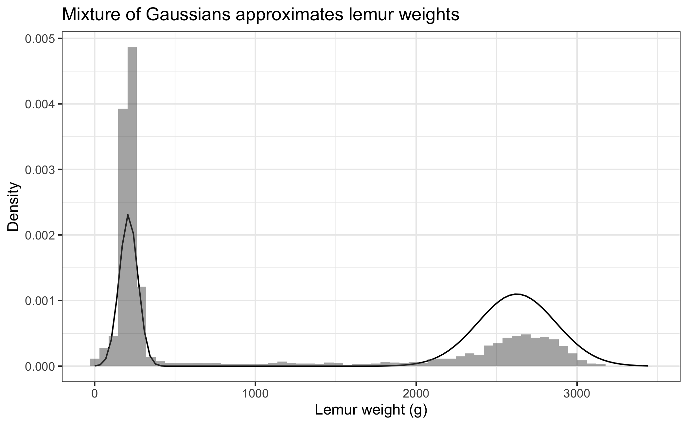

# copy this code chunk and use this data for the exercise
library(tidyverse)
set.seed(09567899)
data_norm = tibble(x = c(rnorm(95, 100, 5), rnorm(5, 70, 5)),
y = c(rnorm(95, 100, 5), rnorm(5, 70, 5)))
ggplot(data_norm, mapping = aes(x = x, y = y)) +
geom_point() +
theme_minimal()Lab 3: dream of plots
Due Monday February 13 at 5:00pm
“I dream of plots, and then I plot my dreams”
Vincent van Gogh (loosely)
By the end of the lab, you will…
- recreate plots starting from untidy data sets
- create your own plotting tools
- plot an admixture density
Warning
Make sure everyone in your team knows when to stop committing! After 5pm on the due date will result in late penalty applying for the team, even if commit is “accidentally” pushed.
Getting started
In the terminal tab, type
cd ~to navigate to your home directory. Nextgit clone git@github.com:sta323-sp23/lab-3-team_name.gitwhereteam_nameis replaced with your team name (see the excel signup sheet in box or your github).Navigate to your
lab-3folder and open the.Rprojfile.Open the Quarto (
.qmd) file, change the author name to your team name followed by a colon and then the names of the team members.
Exercises
For all exercises, you should respond in the space provided in the template lab-3.qmd and show all your work. In all answers of type double, three significant figures suffices.
1. Re-create the plot
Using the untidy data set statsci.csv, re-create the plot below. Pay attention to re-creating exactly all aspects of the plot, e.g. axes, labels, capitalization etc.

Hint
- Begin by making the data set tidy.
- The colors used are:
"cadetblue4","cadetblue3","lightgoldenrod4","lightgoldenrod3". - The position of the legend is \((0.2, 0.8)\).
- Double check that your plot renders nicely. The default should be fine, but you might need to adjust
fig-widthandfig-heightYAML options read here.
2. Custom ggplot functionality
Create a new stat called stat_outlier_encircle() that encircles outliers in a set of bivariate data. Define an outlier as when both values in a data pair have a z-score greater than three in absolute value. Check out https://ggplot2.tidyverse.org/articles/extending-ggplot2.html.
Some examples of stat_outlier_encircle() in action are given below.
A typical scatter plot with ggplot() and geom_point():
An added layer that marks outliers:
ggplot(data_norm, mapping = aes(x = x, y = y)) +
geom_point() +
stat_outlier_encircle() +
theme_minimal()
ggplot(data_norm, mapping = aes(x = x, y = y)) +
geom_point() +
stat_outlier_encircle(color = "purple", size = 14,
fill = "lightblue", alpha = .4) +
theme_minimal()
Create the new stat stat_outlier_encircle() so that the code chunks above give the output above.
Hint
See ggplot lecture for a template and read the documentation here for help.
3. Admixture density plot
Plot the density of the admixture distribution you created in lab 2 case (iv). Overlay your plot on the histogram of lemur weights (find lemurs.csv in the data folder).
Create a second plot like you did above, but adjust \(\mu_1\), \(\mu_2\), \(\sigma_1\) and \(\sigma_2\) until your distribution fits the plot better. Report the values you choose for \(\mu_1\), \(\mu_2\), \(\sigma_1\) and \(\sigma_2\). An example of such a fit is provided below. Your plot does not need to look exactly like the one below. Explain why you choose the values you do for \(\mu_1\), \(\mu_2\), \(\sigma_1\) and \(\sigma_2\).

Hint
- How can you make the y-axis of the histogram be on the “density” scale instead of the “count” scale?
- Previously you created
rMyNormalMixturefunction that randomly sampled from your distribution. Now you want to create adMyNormalMixturefunction that returns the density of the function instead, see e.g.dnormdocumentation.
Style guidelines
All assignments in this course must employ proper coding style, as outlined below:
All code should obey the 80 character limit per line (i.e. no code should run off the page when rendering or require scrolling). To enable a vertical line in the RStudio IDE that helps guide this, see the style guidelines from lab 0 or ask a member of the teaching team for help.
All commas should be followed by a space.
All binary operators should be surrounded by space. For example
x + yis appropriate.x+yis not.All pipes
%>%or|>as well as ggplot layers+should be followed by a new line.You should be consistent with stylistic choices, e.g. only use 1 of
=vs<-and%>%vs|>Your name should be at the top (in the YAML) of each document under “author:”
All code chunks should be named (with names that don’t have spaces, e.g.
ex-1,ex-2etc.)File names in your GitHub repo such as
lab-x.qmdmust not be changed and left as provided. Additionally, your repo must pass certain basic checks. The results of these checks are visible on GitHub via the badges at the top of your README and the actions tab. These are meant to give you feedback around the structure and reproducibility of your repository and assignment - they do not assess the correctness of your work. You should consider them a necessary but not sufficient condition when turning in your work - passing all of the checks simply means your have met a minimum standard of reproducibility for the assignment.
Fundamentally, the check is making sure 1) you only have the files you should in your repository, 2) your .qmd renders.
If you have any questions about style, please ask a member of the teaching team.
Submitting your lab
To submit your assignment, simply commit and push your completed lab-x.qmd to your GitHub repo. Your most recent commit 48 hours after the assignment deadline will be graded, and any applicable late penalty will be applied (see the syllabus). For this reason, do not push commits after you are satisfied with your work, or a late penalty will be applied.